Running American Truck Simulator as an owner/operator: finding freight through brokers, negotiating the rate on the phone, planning whether a load can legally be made, and getting paid — with the money kept honest between the game and the GDC Companion App.
In the game a job shows a figure and pays it the moment you deliver. An owner/operator's life is not like that: you find the freight through brokers, the broker keeps a cut, you wait weeks to be paid, and some never pay at all. This app plays that part of the career on top of the game.
It is the freight side of the career and nothing else. The GDC Companion App already runs the business around the truck — the bank, the books, loans, taxes, insurance, maintenance, living costs and live hours of service — and this app does not repeat any of it.
| The GDC Companion App | TruckSim Owner-Operator |
|---|---|
| Bank accounts and moving money | Says what money should move, which way and when; never moves it |
| Fuel, repairs, insurance, the truck note, living costs | One typed-in all-in cost per mile, to judge loads by |
| Live hours of service and logs | Planning ahead: can this load be made legally, and when do the rests fall |
| Owning trucks and trailers | Knows whether you pull your own trailer or the shipper's |
| — | Brokers, phone calls, rates, lanes, invoices, what you are owed, home life |
The Companion App owns the money and the truck; this app owns the freight. If both apps posted fuel or repairs, every one of them would be counted twice. So this app never posts a cost, and never touches a bank.
TruckSim Dispatcher, the company-driver app, assigns your freight and polices you. This one does neither. It tells you what each load really leaves after your costs, whether it can be made, and what a broker is really offering — and then you decide. It still says plainly when a load cannot be made legally or will miss its window.
A broker's rate is always less than or equal to what the game pays for the job. The game's figure is the shipper's money; the broker keeps a margin out of it and pays you the rest. Negotiating wins back some of the broker's margin and nothing more. That is why every dollar in this app can be squared with the game bank: nothing is ever paid from outside the game.
TruckSimOwnerOperator-v0.9-alpha.zip into a folder of its own, for example
Documents\TruckSim Owner-Operator.http://127.0.0.1:5273. Nothing needs installing: no .NET, no internet connection.If Windows SmartScreen warns about an unrecognised app, choose More info → Run anyway. The program is not signed.
Beside the exe, in a folder called oo-data: career.json is the career, with dated backups
next to it. Back that folder up and you have backed up the career. To move to another PC, copy the exe and the
oo-data folder together.
If you set an Anthropic API key in Settings, it is stored in career.json. Anyone with the file has
your key.
The two apps are separate programs with separate careers. They do not read each other's files and can run at the same time: Dispatcher on port 5173, Owner-Operator on 5273. If the port is taken, the app picks the next free one and the console says which.
Everything in the app works without one. With an Anthropic API key in Settings you also get:
Each read or phone turn costs a fraction of a cent on your own Anthropic account.
Start ATS on a fresh profile with a Companion App driver tied to it, so the game, the Companion App and this app all begin from the same day. Then fill this in from the game.
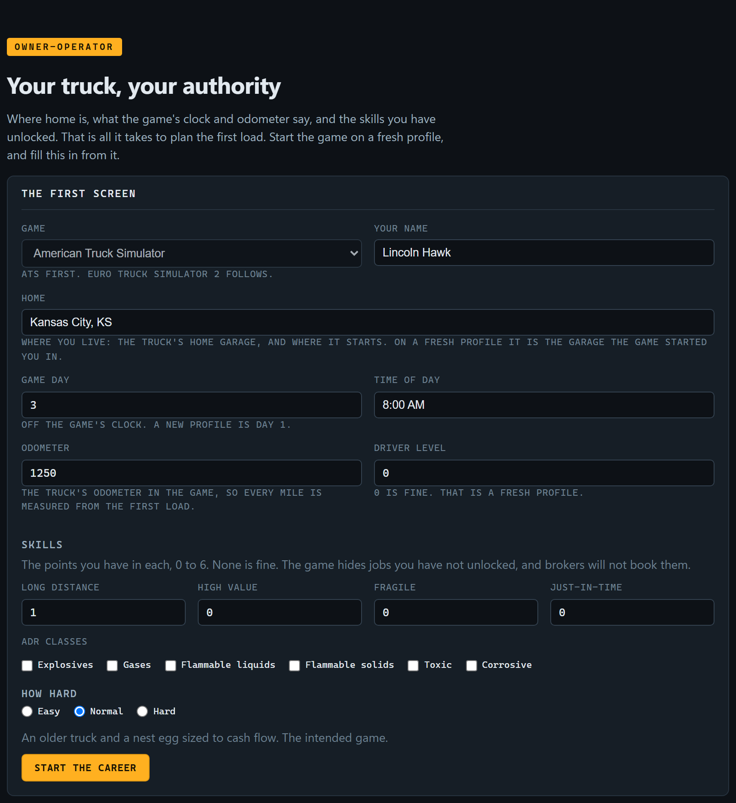
| Field | What to put |
|---|---|
| Your name | Your driver's name. |
| Home | The city you live in: the truck's home garage, and where it starts. On a fresh profile, the garage the game started you in. Pick it from the list as you type. |
| Game day, time | Off the game's clock. A new profile is Day 1. |
| Odometer | The truck's odometer in the game, so every mile is measured from the first load. |
| Driver level | 0 on a fresh profile. |
| Skills | The points you have in Long Distance, High Value, Fragile and Just-In-Time (0–6), and the ADR classes you have. None is fine. The game hides jobs you have not unlocked, and brokers will not book them. |
| How hard | The preset: see below. Normal is the intended game. |
Every career starts with your own authority, a truck, no trailer, and a nest egg. The truck and the money are the game's and the Companion App's: set them up there to match. The preset sets the truck the app plans with and the starting cost per mile.
| Preset | Truck | Cost per mile | Money to start with |
|---|---|---|---|
| Easy | 2019 Freightliner Cascadia, 6.8 mpg | $1.55 | Generous. Room to learn. |
| Normal | 2013 Peterbilt 579, 6.0 mpg | $1.70 | About two months of fixed costs, plus fuel across the first net-30 before any broker pays, plus one major repair. |
| Hard | 2013 Peterbilt 579, 6.0 mpg | $1.85 | The legal minimum. Every load counts. |
The cost per mile is a starting figure. Set your own in Settings from what the Companion App says you spend (see Section 15).
You start without a trailer, so you pull the shipper's: the game's Freight Market, not the Cargo Market, which needs a trailer of your own. Buying a trailer later is a growth step (Section 14).
There is no button for it on purpose. Delete or rename the oo-data folder with the app closed, and the
next start shows the first screen again.
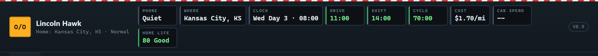
| Tile | What it says |
|---|---|
| Where, Clock | Where the app thinks the truck is, and the game time. Kept current by what you log. |
| Drive, Shift, Cycle | Your hours left. Amber when under an hour (or under 11 on the cycle). |
| Cost | Your all-in cost per mile. |
| Can spend | What you may spend in the game bank: its balance less shipper money still waiting to move (Section 11). -- until you tell the app the balance. |
| Home life | 0 to 100 (Section 13). Green from 70, amber from 40, red below. |
| Phone | Quiet, or ☎ Ringing when a broker or home is calling. Click it to go to the call. |
| Tab | For |
|---|---|
| Board | The jobs where you are, ranked; a line for the booked load; the booked lane. |
| Active Load | The booked run: its appointment, the plans, the trip log, the arrivals and the close-out. A pip on the tab while a load is booked. |
| Brokers | The phone, and the broker directory. |
| Money | The game bank, transfers to make, Broker holding, and invoices. A number on the tab is transfers waiting. |
| Home | Home life, the dates on the calendar, your promise. |
| Truck & clocks | Where and when, your hours of service, the truck and the trailer. |
| Settings | Cost per mile, skills, Long Distance limits, the AI key. |
| Log | Everything that has happened, newest first. |
Above every tab, the app shows what needs you now: a phone ringing (amber), home calling or home life at the bottom (red), or a holiday. Answer or deal with it from the banner, or carry on and come back to it.
The first time, the Board tab walks you through it. Each step ticks off as you do it.
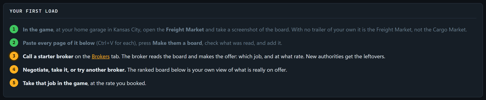
City, ST, loaded miles, pay and the
delivery window as the game lists it.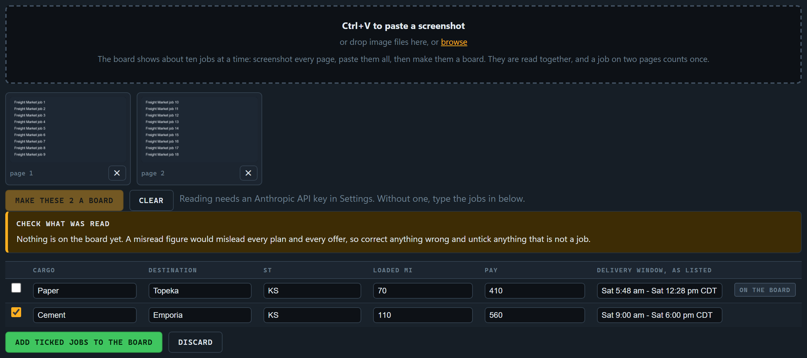
A job you cannot run is refused with the reason: past your Long Distance limit, or needing a skill you lack.
This is the heart of the early game. When you call a broker with a board pasted, the broker reads it and offers one of its jobs at their rate. Which one depends on who you are to them:
The ranked board stays on screen as your own view, so an offer can be judged against everything else that was there. That gap is what a better record closes.
From the second load on, the phone usually rings during the run with the next one (Section 10). The board where you are is needed again when a lane picks up, or when you are home.
Every job is planned the same way TruckSim Dispatcher plans a load: hours of service, rests, the drive from where you are, the dock. What changes is the verdict: the app ranks; you choose.
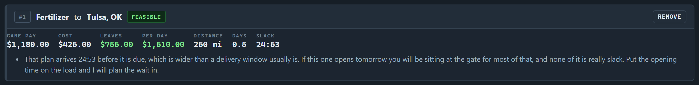
| Figure | Meaning |
|---|---|
| Game pay | What the game pays for the job. The ceiling: no broker pays you more than this. |
| Cost | Your cost per mile across every mile of it: the run to the shipper and the loaded miles. |
| Leaves | Game pay less cost: the most this job could leave you, if a broker paid the game's full figure. |
| Per day | What it leaves per day of your time, empty run out of the destination included, so a well-paid job into a dead market shows its real price. Short jobs count as at least half a day. |
| Distance, Days | Planned miles, and the days the job takes you. |
| Slack | How much spare time the plan leaves before the window shuts. |
Feasible: makes it with room. Tight: makes it, but a delay would sink it. Infeasible: cannot be made legally on your clocks. The notes under a job say why, and anything else worth knowing: a skill it needs, which trade it belongs to, which way home is.
The Leaves figure is the best case. The broker's offer is what you really get; the phone shows what that leaves you (Section 8).
The game has no brokers. They are a layer the app runs on top of the game's jobs. They are fictional companies, apart from the game's own shippers who hire you directly once you have the record for it.
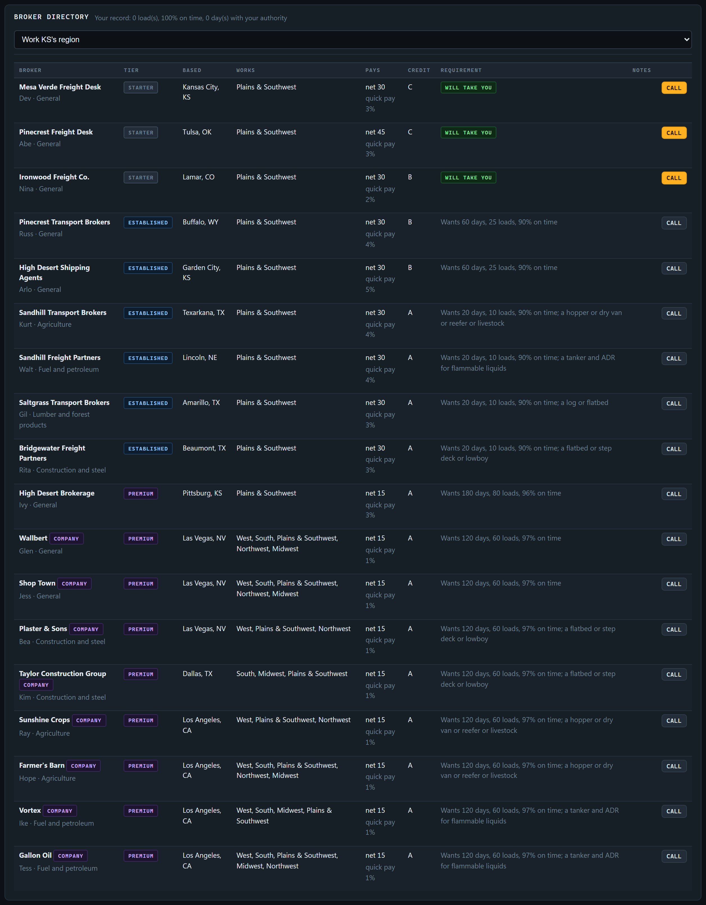
Your contact book. Each entry shows the broker's tier, where they are based, which regions they work, how they pay (net days, and the quick-pay fee), their credit rating, their requirement against your record, and your own notes on them, which fill in from your calls (“drives a hard bargain”, “did not pay”). The filter shows brokers who work where you are, brokers who will take your call, or everyone you know.
A broker joins the directory when you reach a city in a region they work. A new career knows the brokers of the home region; drive further and the list grows.
| Tier | Takes you on with | What you get |
|---|---|---|
| Starter | Any authority | The leftover jobs, the widest margins (they keep about a quarter), net 30 or 45, and the shaky payers: credit B, C or even D. |
| Established | 60 days with your authority, 25 loads, 90% on time | Jobs from the middle of the board, fairer margins, net 30, credit A or B. |
| Premium | 180 days, 80 loads, 96% on time | The best jobs, the thinnest margins, net 15 or 30, credit A. |
Calling above your tier is allowed and costs nothing: a short call, “call me when you've got some history”. The starter tier is where the record is built, and it is always there to fall back on.
Every region has one specialist broker per trade. They book only their freight, need the trailer for it (and the ADR class for fuel), pay better than a general broker, and want a short record first: 20 days, 10 loads, 90% on time.
| Trade | Freight | Trailer |
|---|---|---|
| Agriculture | Grain, feed, fertilizer, produce | Hopper, dry van, reefer or livestock |
| Fuel and petroleum | Fuel, oil, chemicals | Tanker, and ADR for flammable liquids |
| Lumber and forest products | Logs, sawn lumber, pulp | Log trailer or flatbed |
| Construction and steel | Steel, machinery, building supplies | Flatbed, step deck or lowboy |
This is how a trailer pays for itself: buying a tanker opens the fuel brokers.
Eight of the game's own companies hire owner/operators directly to pull their freight: Wallbert and Shop Town (general merchandise), Plaster & Sons and Taylor Construction Group (building), Sunshine Crops and Farmer's Barn (agriculture), and Vortex and Gallon Oil (fuel).
| Credit | How they really pay |
|---|---|
| A | On the day. |
| B | A day or two late. |
| C | About a week late, sometimes more. |
| D | Two to three weeks late at best, and four times in ten not at all. Only starter brokers are D. |
Every broker has a fixed personality. It is not printed in the directory: you learn it from the calls.
| Personality | On the phone |
|---|---|
| The grinder | Opens low, moves in small steps, patient. “That's the rate.” |
| The friend | Chatty; moves fast for people they trust, slowly for strangers. Will look for something better. |
| The corporate desk | Will not move on rate; trades terms instead (quick pay, detention). “Per our policy.” |
| The hustler | Opens generous to hook you, then disputes detention. |
| The old hand | Fair from the first offer, little room either way; gives way to a true argument. |
| The rookie | Over-generous by mistake; nervous; checks with the boss. |
Every booking is a call. The app negotiates; the AI only talks. Every number — the offer, the most the broker will ever pay, when they hang up — is worked out by rules. You cannot talk anyone into paying more than the economics allow, and nobody can invent a rate.
Press Call on a directory entry. The call opens at the top of the Brokers tab.
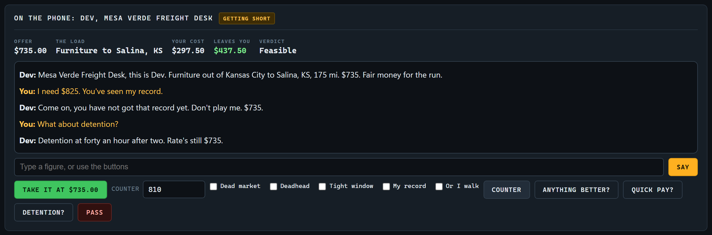
The broker's offer, the job, your cost for it, what the offer leaves you, and the verdict. The badge beside the broker's name is their mood: relaxed, then getting short, then about to hang up. Each move you make uses some of their patience.
| Move | What happens |
|---|---|
| Take it | Booked at the offer. Take the job in the game. |
| Counter | Ask for a figure, with arguments ticked. A broker moves towards it as far as their personality and margin allow; the true arguments buy more. |
| Anything better? | Asks for a different job. Once per call. A friendly broker, or one you have standing with, may find one; a starter usually says take it or leave it. |
| Quick pay? | Paid in days rather than weeks, for the broker's quick-pay fee. |
| Detention? | $40 an hour after 2 hours waiting at either dock, billed from your log (Section 12). |
| Pass | Ends the call. Nothing booked, no harm done. |
| Can't make it in time | Only shown when the broker warned the listing is about to come off the board. No penalty: no patience, no standing. The broker drops that job and offers another, or says there is nothing else. |
The game's jobs only stay on the market for so long. When the job a broker offers has under 45 minutes left on its listing, the broker warns you (“that one comes off the board in 0:36, can you get there in time?”). Only you know where you are on the road, so it is your call. If you cannot get there in time, say so: it is nobody's fault. A job at the dock you are standing at cannot run out from under you, so it gets no warning. The countdown comes from the screenshot reader, which reads it off the board.
Push past their patience and the broker hangs up: “I'll find another truck.” Call again later, or call someone else.
The app knows the truth, and checks every argument against it.
| Argument | True when |
|---|---|
| Dead market | The destination is a thin freight market. |
| Deadhead | There is a real empty run to the shipper, or out of a dead market. |
| Tight window | The plan is Tight, or has under three hours of slack. |
| My record | You have at least 5 loads at 95% or better on time. |
| Or I walk | Always allowed. On a broker's last nerve it gets their best figure, once. |
A false argument is caught: it costs a point of patience and some standing with that broker, and the call goes on. On a lane (Section 10), deadhead means the pickup is somewhere other than your drop, and a tight window means the pickup is within a day of the offer.
Type in the box and press Say, in your own words: “2,150 and you pay detention, Topeka is dead this week”. The app reads what you mean (an amount, an acceptance, arguments, a term) and the broker answers in their own voice with the figure the app chose. The buttons still work alongside it. Without a key, the box takes a plain figure.
Each broker keeps a standing with you, from −100 to 100 (Section 16). It buys a little of their margin, more patience, an easier “anything better?”, and earlier calls with lanes. Let them down and they cool off; far enough, and they stop taking your calls.
Once a load is booked, the run lives on the Active Load tab, the second one, laid out like TruckSim Dispatcher's. The Board keeps a short line saying what is booked.
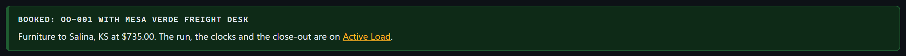
The top panel says the job to take in the game (shipper and city to receiver and city), what the broker pays you, what the game will pay (the shipper's money, Section 11), and the detention terms if you agreed them. Then the receiver's side, set exactly as company dispatch sets it:
| It says | What it means |
|---|---|
| Window | When the receiver opens to the time it shuts. Nobody takes a load before the window opens. |
| Appointment | A booked slot inside the window. Aim for it. Past it you have a grace period (2 hours by default) before it counts against you. |
| Taking it early | No slot to keep: any time inside the window works, and what you save is yours to reload against. |
| No slot: take your turn | A job site. It is a gate rather than a door: turn up before they open and you wait in line. |
| Due | No window on the listing, only the time it must be delivered by. |
| Parking, their hours | Whether the receiver lets you sit on their property, and a site's working day. |
Under it: the plan it was booked on, with its full hours-of-service timeline, and From here, the same plan worked again off your latest clocks and position. Open Report your clocks and where you are, type them (or paste a GDC recap screenshot, with an AI key), and press Save, and re-plan from here.
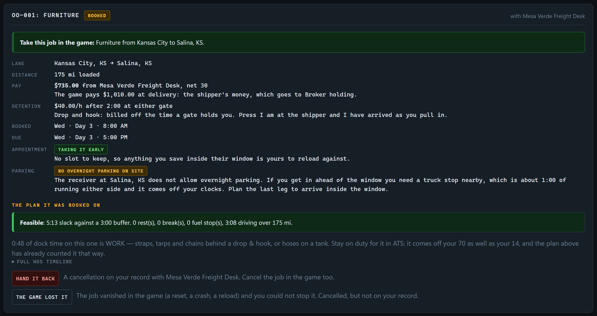
6:30 PM, 6:30 pm or 18:30 all work.9:15, not 9.25.| Panel | When |
|---|---|
| At the shipper? | When you pull in at the pickup, before you load or hook. The shipper's answer comes up: ready now, or a time to set the game clock to, and why. Waiting on their property counts toward detention. |
| Report after loading | Hooked and leaving. Type the odometer as it reads now: the road to the receiver is learned off it. This is when the phone may ring. |
| Trip log | Begin and end of loading and unloading (not on drop and hook), fuel, a break, a rest, a scale, a delay, a breakdown, or a note. A break and a rest open an end time at their standard length; type over it if you sat longer. Put the time you rolled again on a delay or a breakdown too. |
| At the receiver? | When you pull in, before you unload. Straight onto a door, or a time to set the clock to and the reason. |
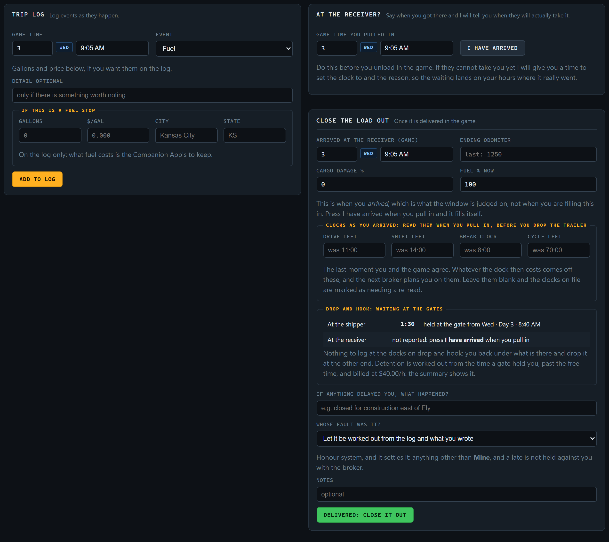
Typed a stamp wrong? Press fix on the entry to correct it or drop it. An AM/PM slip otherwise teaches the planner a dock time that never happened. On a live load, log the Begin and End pairs at each dock if you agreed detention: that is what it is billed from. Every run you log teaches the planner your real speed, your roads and each dock's times.
The road from shipper to receiver is learned from the odometer when you pull out and when you deliver, and the next job on that road is planned at what you drove. Leave it empty when you pull out and nothing is learned from that run; that is better than a reading from before the drive to the shipper, which would teach the planner a road far longer than it is.
Running power-only off the Freight Market is drop and hook, as in TruckSim Dispatcher: you back under the shipper's trailer and drop it at the receiver. There is no dock time, so there are no Begin and End pairs to log, and the trip log does not offer them. Press I am at the shipper and I have arrived as you pull in: if a gate holds you, that wait is what detention is worked out from, and the stamps are what win a broker's dispute over it. The close-out shows the waits at each gate in place of dock times.
Once it is delivered in the game, fill in Close the load out:
| Field | What to put |
|---|---|
| Arrived at the receiver | Filled from your log. It is what the window is judged on, not the time you are closing out. |
| Ending odometer | Required: the run is measured off it. |
| Clocks as you arrived | Drive, shift, break and cycle, read when you backed in. The dock time comes off them, and the next broker plans you on them. Leave them blank and the clocks on file are marked as needing a re-read. |
| Dock time and detention | Worked out from your log, with the detention the invoice will bill. Where you did not log a pair, type the time instead. On drop and hook, the waits at each gate. If the receiver took you at a different time from the one quoted at the gate, say so. |
| Cargo damage % | Damaged freight is a claim: it goes on your record and costs standing with the broker. |
| Fuel % now | So the next plan knows when you need to stop. |
| What happened, and whose fault | For a late: Mine, Nobody's (traffic, weather, a dock that held you), The truck, or The game. Left alone, it is worked out from the log and what you wrote. Only Mine counts against you with the broker. |
| Notes | Anything worth keeping with the run. |
Press Delivered: close it out. The app reads back what is about to be filed, and only Yes, it is delivered files it.
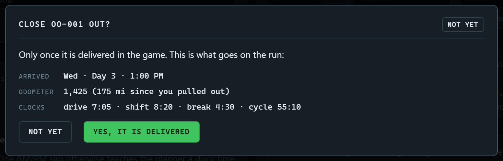
Then the summary, as TruckSim Dispatcher gives one: whether it was on time and whose fault a late was; the dock times and detention; what the run taught the planner (your speed, the dock times, the road); the plan against what happened; the miles; the invoice, the detention billed and the money to move; and what was carried forward: where you are, the game clock moved across the dock, and your clocks.
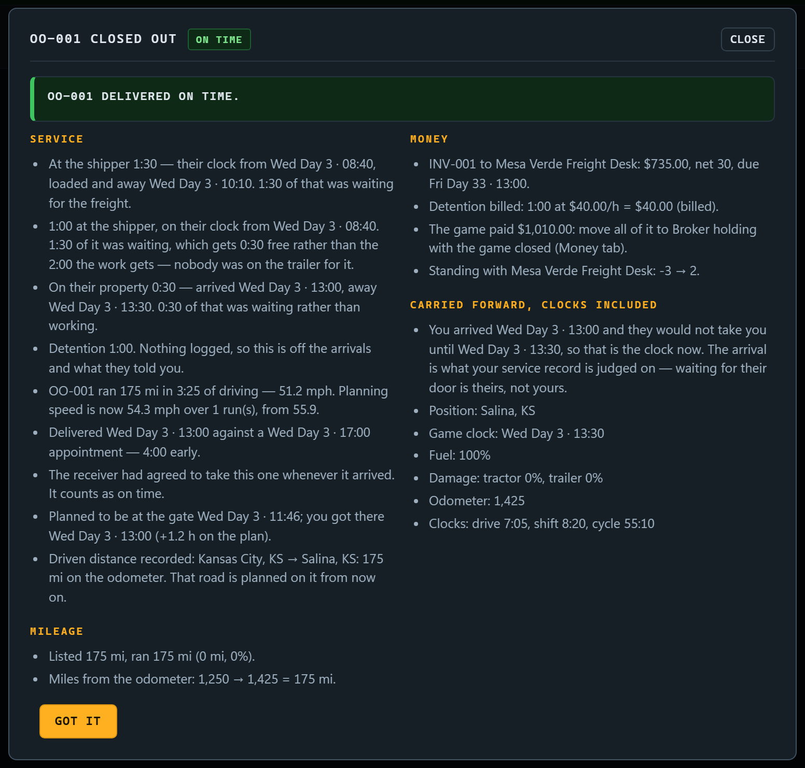
Hand it back cancels the booking. It goes on your record as a cancellation and costs standing with that broker. Cancel the job in the game too.
A game reset, a crash or a profile reload can make the job vanish, and you could not have stopped it. Press The game lost it instead: the booking is cancelled, but not on your record, and the broker holds nothing against you. Keep it for that: a load you chose to drop is a hand-back.
The game offers jobs only in cities you have discovered, and nobody wants to screenshot a dozen boards to shop for work. So a broker does not book you a game job ahead of time. They book a lane, and the game supplies the job when you get there.
A pickup city, a pickup window, a region to deliver into, a distance band, and a rate per mile. For example: pick up in Salina, KS from Day 3 14:01, into the Plains & Southwest, 190–320 mi, at $3.84/mi.
Once you are loaded and within about a day and a half of empty, a broker who works your destination's region may ring. Not every run gets a call. The chance starts around even, and is higher the better your standing with that broker.
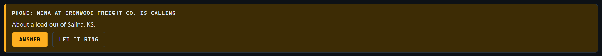
Answer asks for your clocks first: drive, shift, break and cycle left, as the HOS display shows them. Telling a broker your hours is how they know how far they can plan you, and the lane's pickup is worked again off them: answer with a full cycle on a lane planned around a restart, and the pickup comes forward. Then the call opens on the Brokers tab. Let it ring lets the lane go.
The phone only rings when you report something to the app, such as pulling out loaded, and a ringing call waits until you answer it or let it ring. While it waits, the Phone tile in the top bar says ☎ Ringing on every tab (click it to go to the call), and the browser tab's title says who is calling. A short ring plays once. With the app on another screen, turn on Desktop alerts in Settings and Windows shows the call too. A call from home shows the same way.
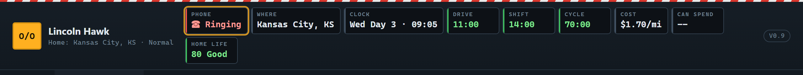
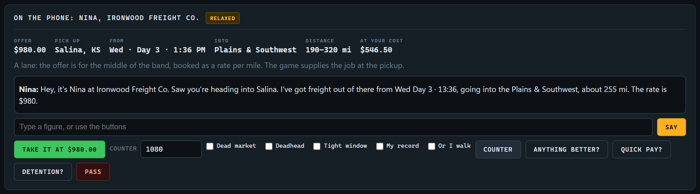
Negotiate it like any call. “At your cost” is what the middle of the band leaves you at your cost per mile.
On a run, you can call a broker yourself, but only from a break or a rest: not from behind the wheel. Log the break first, then press Call and tell them your clocks. The broker offers a lane out of where this run ends, planned off them. It is based on the lane, not on any board.
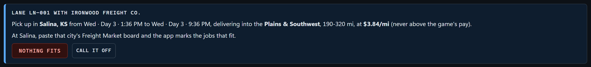
On the last day of a full home time, a broker who works your home region rings with a load out of home.
At delivery the game pays its full figure into the game bank. None of it is yours until the broker pays, and then only the rate you booked. This app keeps that honest, using the Companion App's accounts.
| Account | Where | Holds |
|---|---|---|
| Game bank | ATS | Only money you are allowed to spend. |
| Broker holding | Companion App | The game's pay for every delivery, waiting for the broker to pay. Create this account in the Companion App. |
| Your account | Companion App | Your own money. |
This app never moves money. It lists what should move, which way and when. You move it with the Companion App's transfer screen, then press I've moved it.
The Companion App can only move money in or out of the game while ATS is closed. Close it, make the move, and press I've moved it: the app takes your word for it. Moves between the Companion App's own accounts do not need the game closed.
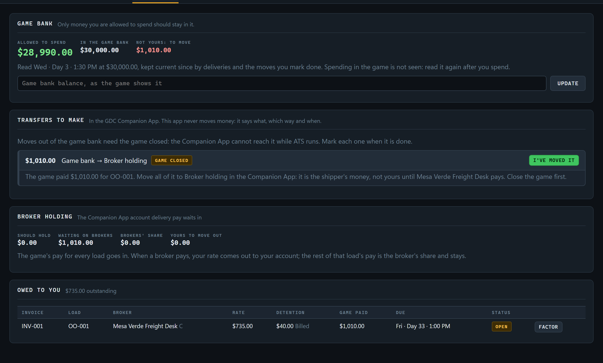
Type the balance the game shows and press Update. From then on the app keeps it current: up by each delivery's pay, down by each move you mark done. Allowed to spend is that balance less shipper money still waiting to move. That is the figure in the top bar.
The app cannot see you spend in the game, on fuel or a repair. Read the balance again after spending.
| Figure | Meaning |
|---|---|
| Should hold | What the account should have in it, from the moves you have marked. |
| Waiting on brokers | Game pay for loads whose invoices are not yet paid. |
| Brokers' share | What is left of paid loads after your rate: the brokers' money. It stays. |
| Yours to move out | Rates paid and not yet moved to your account. |
Detention and TONUs are paid out of the brokers' share already in Broker holding, as far as it covers them. No money ever comes from outside the game.
Every delivered load becomes an invoice in Owed to you on the Money tab: the rate, any detention, the game's pay, the due date, and its status.
| Status | Meaning | You can |
|---|---|---|
| Open | Not yet due. | Factor |
| Overdue | More than a day past due. | Factor Chase Write off |
| Paid | The broker paid. Move the rate to your account. | — |
| Factored | Sold to a factor; the money came early. | — |
| Collections | Handed to a collector. Expect half, in about two weeks. | Write off |
| WrittenOff | Given up on. | — |
Sell an invoice for cash now, less a fee by the broker's credit: 2.5% at A, 3.5% at B, 6% at C. Nobody buys a D. You move the rate less the fee out of Broker holding straight away; the fee stays in Broker holding. When the broker pays later, it is the factor's.
An overdue invoice can be chased. A broker who means to pay pays sooner. One who does not says they will look into it; chase again and it goes to collections, which recovers half the rate in about two weeks. Or write it off: the money is gone, the game's pay for it stays in Broker holding (none of it was ever yours), and the directory notes that the broker did not pay.
Agreed on the call, at $40 an hour after 2 hours. It is billed from the dock times you logged (Section 9): arrival and begin/end load at the shipper, arrival and begin/end unload at the receiver. Nothing logged, nothing billed.
Some brokers, the hustlers especially, dispute it. Press Argue detention: the times in your log win it. It is paid with the invoice, out of the brokers' share in Broker holding.
Thirty game days. At the game's pace that is a long time, which is the point: owner/operators fail on cash flow, not profit. Quick pay and factoring are the ways round it, at a price.
In the US nothing sends a driver home, and an owner/operator who never goes home loses nothing by it. This app does not support the driver who lives in the truck: every driver has a home, and has to go back to it.
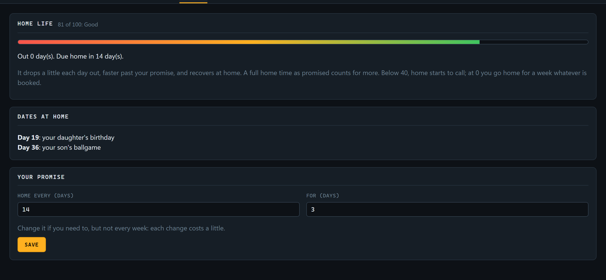
How often you will be home, and for how long. It starts at every 14 days, for 3. Change it on the Home tab, but not every week: each change costs a little.
| What | Effect |
|---|---|
| A new career | Starts at 80, at home |
| Each day out, inside your promise | −2 |
| Each day out, past your promise | −5 |
| Each day at home | +10 (+20 over the holidays) |
| A full home time, as promised | +10 more |
| A date at home, made | +15 |
| A date at home, missed | −25 |
Two things are always on the calendar, each known at least a week ahead: a birthday, a ballgame, an anniversary. Be home on the day to make it. A missed one is replaced by a new one.
Below 40, the phone rings from home: something has come up, be home by a set time. It comes mid-run, so the load on the truck is either delivered on the way or handed back, a cancellation on your record. Getting home in time gives back 10; missing it costs 20.
At 0, the driver goes home for a week whatever is booked. No broker will book you until then. Nothing earns, and the truck's costs keep coming due in the Companion App.
Thanksgiving week, Christmas and New Year fall where they really do. Freight goes quiet and brokers keep about 5% more of it, and days at home count double: the natural time for a long home time.
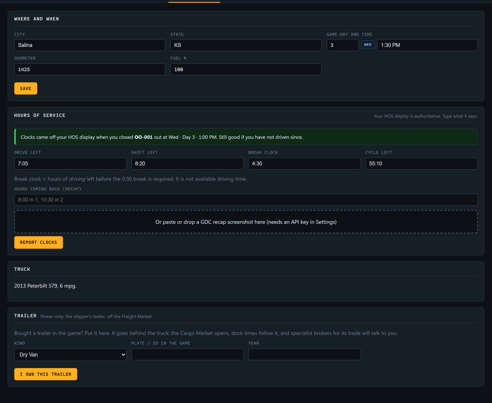
Correct the app here whenever it is out of step with the game: the city, the game day and time, the odometer and the fuel.
Laid out as in TruckSim Dispatcher: your HOS display is the authority, so type what it says, as h:mm. Drive, shift, the
break clock (driving left before the 30-minute break, not driving time) and cycle, plus hours coming back on your
recap, as 8:00 in 1, 10:30 in 2. Or paste a GDC recap screenshot, with an AI key. The panel says how fresh they are:
Bought a trailer in the game? Choose its kind, put its plate or ID and year, and press I own this trailer. It goes behind the truck:
Run power-only drops it and goes back to the shipper's trailers off the Freight Market; Hook my trailer takes it again.
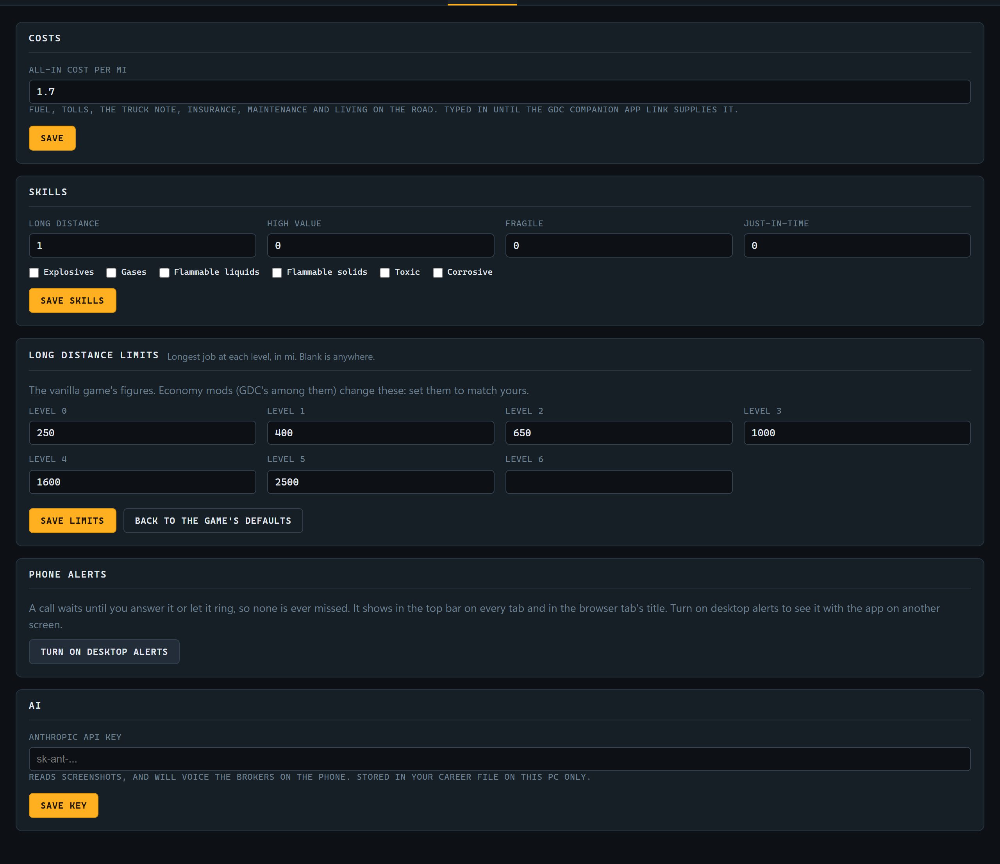
Everything it costs to run a mile: fuel, tolls, the truck note, insurance, maintenance and living on the road. Take it from the Companion App's records: what you spent over a month, divided by the miles you ran. Every load and every offer is judged on this one figure.
Update them when you put a point into a skill or earn an ADR class. Brokers and the board follow at once: a new Long Distance level is a reason to ring round, because longer lanes pay better.
The game only offers jobs as long as your Long Distance skill allows, so no broker books past it. The defaults are the vanilla game's:
| Level | 0 | 1 | 2 | 3 | 4 | 5 | 6 |
|---|---|---|---|---|---|---|---|
| Longest job | 250 mi | 400 mi | 650 mi | 1,000 mi | 1,600 mi | 2,500 mi | Anywhere |
Economy mods change these, GDC's among them. Set each level to match yours; a blank means anywhere. Back to the game's defaults restores the table.
Turn on desktop alerts asks the browser to let the app show Windows notifications, so a call shows even when the app is on another screen (Section 10).
Your Anthropic API key (Section 2). Stored in your career file on this PC only. Paste a new one to replace it.
What every broker looks at before taking you on, shown at the top of the directory: loads delivered, percentage on time, and days with your own authority. Cancellations and cargo claims count against you; a late that was not your fault does not. The tier requirements in Section 7 are measured against it.
| What | Standing |
|---|---|
| Delivered on time | +5 |
| Delivered late, your fault | −10 (a late that was not yours counts as on time) |
| Cargo damaged (a claim) | −5 and more with the damage, up to −20 |
| Booking a load with them | +2 |
| Caught in a false argument | −5 |
| Pushing until they hang up | −3 |
| Calling off a booked lane | −10 |
| Handing a booked load back | −15 |
| Rule | Number |
|---|---|
| A broker's rate | Never above the game's pay for the job |
| Starter / established / premium requirement | None / 60 days, 25 loads, 90% / 180 days, 80 loads, 96% |
| Specialists | 20 days, 10 loads, 90%, and the trailer for the trade |
| Shippers hiring directly | 120 days, 60 loads, 97%, and the trailer for their freight |
| Quick pay fee | 2–5% at a broker, 1% at a shipper |
| Detention | $40/h after 2 h, billed from the dock times logged |
| TONU when nothing fits a lane | $150 from an A or B broker; nothing from C or D |
| Factoring fee | A 2.5%, B 3.5%, C 6%, D not bought |
| Overdue | More than a day past due |
| Collections | Half the rate, about two weeks later |
| Inbound lane call | Once loaded, within about 36 h of empty; not every run |
| Ringing round | From a break or a rest only, with your clocks |
| Answering a broker | With your clocks; the lane is planned again off them |
| Appointment grace | 2 hours past a booked slot before it counts as late |
| Restart before a lane | When the cycle will be under 11 h at empty: 34 h first |
| Home life | Starts 80; −2/day out, −5 past the promise, +10/day home |
| Home calls | Below 40 |
| Hitting bottom | At 0: home for 7 days, no bookings |
| The holidays | Brokers keep 5% more; home counts double |
That is the starter tier working as meant. Ask “anything better?”, try another broker, or build the record that gets you to established brokers.
Press The game lost it on the booked banner. Cancelled, and not held against you.
Not every run gets a call. The broker who rings has to work the region you are delivering into, and has to know you: on your first runs into a new region you may not know anyone there yet. Ring round yourself from your next break.
The directory says why: a record you do not have yet, a trailer or skill missing, standing too low, or home life at the bottom.
You are on a run. Log a break or a rest, then call.
Times of day take AM and PM or the 24-hour clock: 6:30 PM and 18:30 are the same. Check the weekday
beside the day number: Day 1 is a Monday. A wrong entry in the trip log can be put right with fix.
The app cannot see you spend in the game. Type the balance in again on the Money tab.
Take a break or a rest and paste the board again; boards refresh. If still nothing, press Nothing fits.
Correct the city, time and clocks on the Truck & clocks tab, or under From here on the Active Load tab.
Not yet. The two apps keep separate careers.